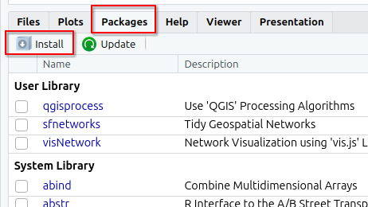

install.packages("tidyverse")
install.packages("readxl")
install.packages("sf")
install.packages("mapview")
install.packages("rmarkdown")
install.packages("centr")
install.packages("od")
install.packages("r5r")
install.packages("rJavaEnv")
install.packages("osmextract") # opcional
install.packages("stplanr") # opcional2 Software
Neste capítulo vamos guiá-lo através da instalação do R, do RStudio e dos pacotes necessários para estas aulas.
O R e o RStudio são softwares que necessitam de download e instalação separados.
2.1 R
O R ou R stats (como também é conhecido) é uma linguagem de programação e um ambiente de software livre para computação estatística e gráficos apoiado pela R Foundation for Statistical Computing.
Os links para download estão no The Comprehensive R Archive Network (aka CRAN). A versão mais recente é a 4.4.2, mas pode usar >= 4.1.x se já a tiver instalada.
Download R-4.4.2 para Windows e correr o ficheiro executável.
Download R-4.4.2 para MacOX. Terá de escolher entre a versão arm64 ou a versão x86-64.
Transfira o ficheiro .pkg e instale-o como habitualmente.
Após esta instalação, não é necessário abrir o R. Prossiga com a instalação do RStudio.
2.2 RStudio
O RStudio Desktop é um ambiente de desenvolvimento integrado (IDE) para o R. Inclui uma consola, um editor de código com realce para as funções de bases, bem como ferramentas para fazer gráficos, e análises estatísticas.
O RStudio está disponível para descarregamento gratuito em Posit RStudio.
Download RStudio 2024.09 e correr o ficheiro executável.
Download RStudio 2024.09 e instale-o como habitualmente.
2.3 Pacotes de R
Terá de instalar alguns pacotes para trabalhar com os dados e os scripts destas aulas.
Pode instalá-los no RStudio procurando por eles no separador Packages:

ou executando o seguinte código (um a um) na consola:
2.4 Java Development Kit
Para utilizar o pacote {r5r} é necessário ter o Java Development Kit (JDK) 21 instalado no computador. Existem inúmeras implementações de código aberto do JDK. A maneira mais fácil de instalar o JDK é usando o novo pacote {rJavaEnv} no R.
# verificar a versão de Java atualmente instalada (se existir)
rJavaEnv::java_check_version_rjava()
## se esta for a primeira vez que utiliza {rJavaEnv}, poderá ter de executar
## este código abaixo para consentir a instalação de Java
rJavaEnv::rje_consent(provided = TRUE)
# instalar Java 21
rJavaEnv::java_quick_install(
version = 21,
distribution = 'Corretto')
# verificar se o Java foi instalado com sucesso
rJavaEnv::java_check_version_rjava()Em alternativa, pode transferir e instalar manualmente o JDK 21.
Aceda a Java Development Kit 21, transfira a última versão 21 correspondente ao seu sistema operativo e execute o ficheiro executável.